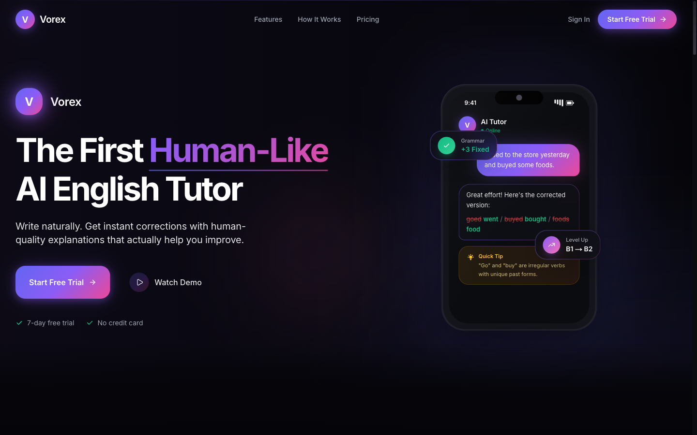

2026 · Shipped
Vorex
An AI English tutor that corrects your writing and explains why. The hero doesn't describe the product — it shows a real correction happening, with the wrong words struck through in red and the right ones in green.

Show the output, not the concept
- A worked example inside the mockup. "goed → went", "buyed → bought", "foods → food". Three real learner errors, corrected on screen, with an explanation underneath. That is the product demo and it costs no interaction.
- Floating badges carry the secondary claims. "+3 Fixed" and "B1 → B2" sit outside the phone frame, so progress and accuracy get stated without another paragraph.
- Gradient on the differentiating words only. "Human-Like" is violet-to-pink; the rest of the headline is white. The gradient marks the claim being made against competitors.
- Objections answered under the button. Seven-day trial, no credit card — the two things that stop a signup, handled in six words.
- Red and green used literally. Wrong is red, right is green. In a language-correction product that convention is already understood, so it needs no legend.
Screenshots and write-up only. The live page currently logs several console errors from a failing analytics request — worth a look, though it does not affect rendering.